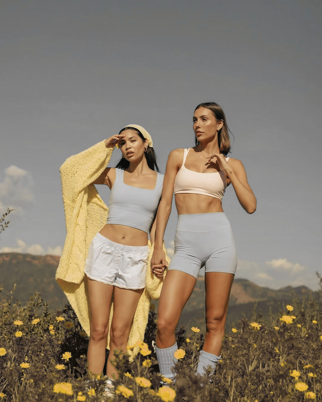
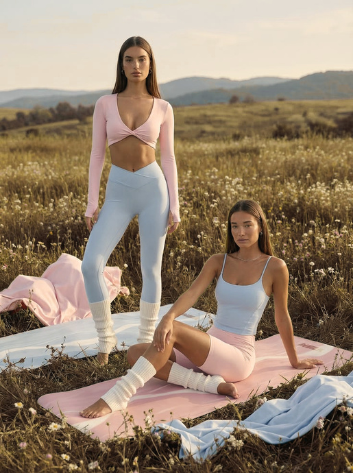
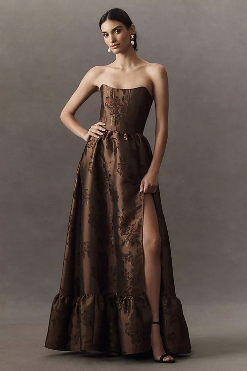

Los Looks
Run & Sculpt · Welcome Party · The WeddingEsta sección reúne el mood de cada momento del wedding weekend para que puedan empezar a visualizar sus looks desde ya. La idea no es que todo se vea rígido o demasiado combinado, sino que cada outfit se sienta lindo, seguro y dentro del vibe de cada plan.
 FIG 006 — Outfit inspo. Les dejo ideas de cada evento del wedding weekend. Don't stress — lo más importante es que estén felices con lo que lleven. Solo no white ni cream.
FIG 006 — Outfit inspo. Les dejo ideas de cada evento del wedding weekend. Don't stress — lo más importante es que estén felices con lo que lleven. Solo no white ni cream.
Cute gym sets & sneakers — que las haga sentirse bellas & confident. No white.

Se dará lugar en las ruinas mayas a las 8am. Transporte desde el hotel. Luego nos juntaremos por un smoothie y regresaremos al hotel for the proper breakfast.

This event is only for close friends & family. Si quieren asistir solo rsvp con Marce.
Colorful midi dresses & skirt sets. Day/sunset party. Colorful prints, movement and fun is the vibe. No white.
La welcome party será el viernes 05 en el pool & bar del Hotel Marina Copán, empezando a las 4:00pm.
Piensen en colores, prints tropicales, telas con movimiento. El ambiente es outdoor y festivo — que se sientan cómodas y lindas.
 FIG 009 — Inspo: midi dresses, colorful prints.
FIG 009 — Inspo: midi dresses, colorful prints.
Chocolate
Look for chocolate, espresso, cacao y dark mocha.
No tienen que ir idénticas, solo dentro de la misma vibe.

FIG 013 — Vestidos largos & elegantes con un factor WOW.Un scarf, un bow, la tela — esos son algunos wow factors que hacen que un vestido sea memorable.
Escojan algo que las haga sentirse hermosísimas.
Aquí les dejaré el link a un pinterest board with inspo — próximamente.